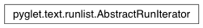

AbstractRunIterator Class¶
-
class
AbstractRunIterator¶ Range iteration over RunList.
AbstractRunIterator objects allow any monotonically non-decreasing access of the iteration, including repeated iteration over the same index. Use the
[index]operator to get the value at a particular index within the document. For example:run_iter = iter(run_list) value = run_iter[0] value = run_iter[0] # non-decreasing access is OK value = run_iter[15] value = run_iter[17] value = run_iter[16] # this is illegal, the index decreased.
Using AbstractRunIterator to access increasing indices of the value runs is more efficient than calling RunList.__getitem__ repeatedly.
You can also iterate over monotonically non-decreasing ranges over the iteration. For example:
run_iter = iter(run_list) for start, end, value in run_iter.ranges(0, 20): pass for start, end, value in run_iter.ranges(25, 30): pass for start, end, value in run_iter.ranges(30, 40): pass
Both start and end indices of the slice are required and must be positive.